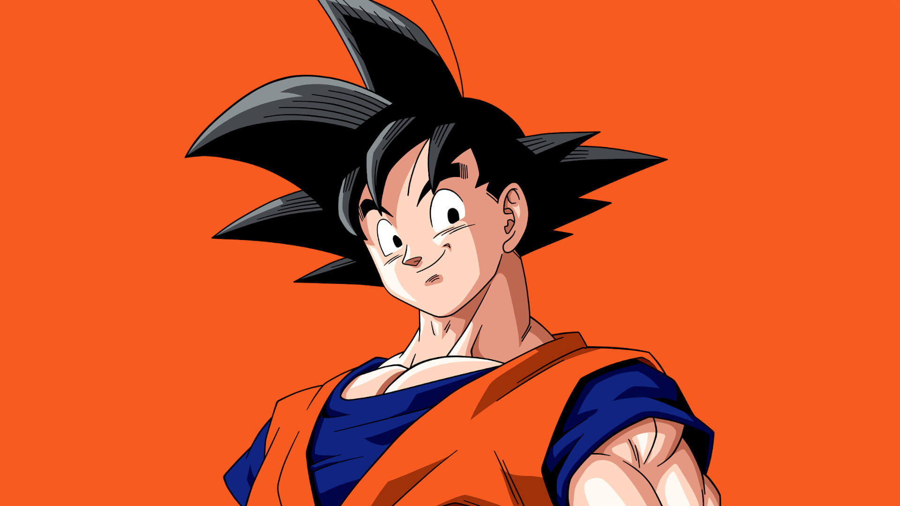
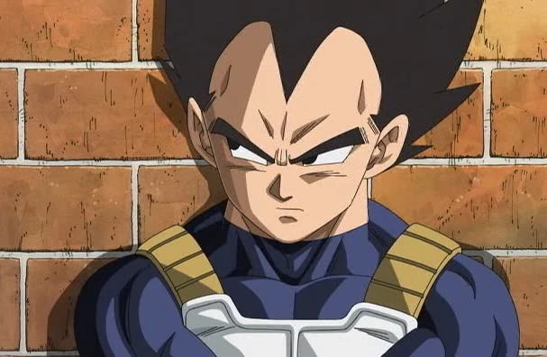
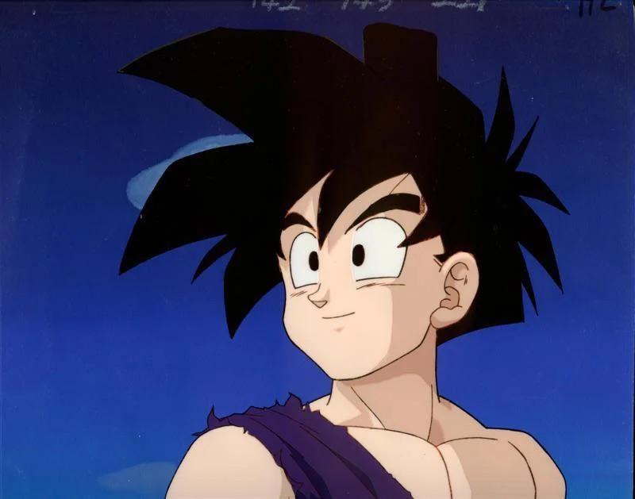
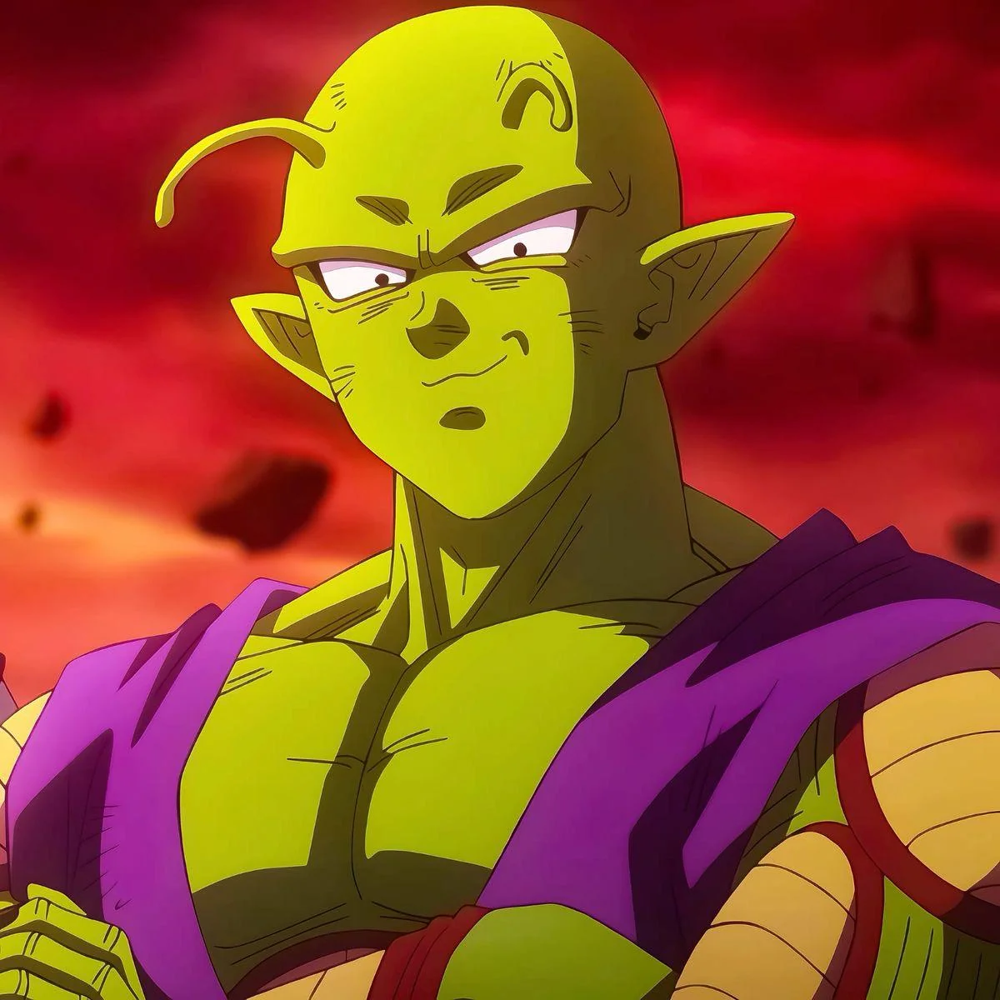
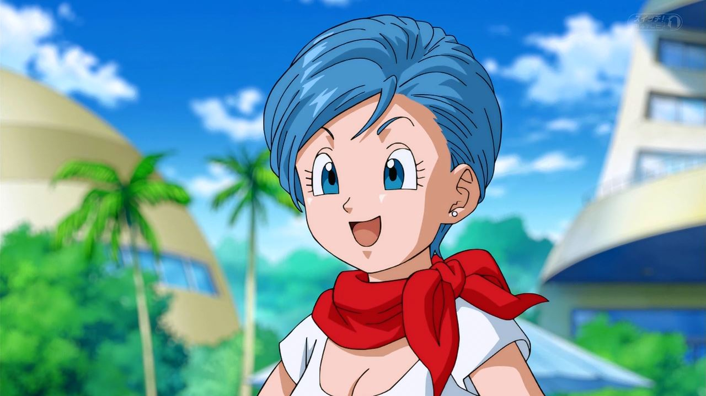
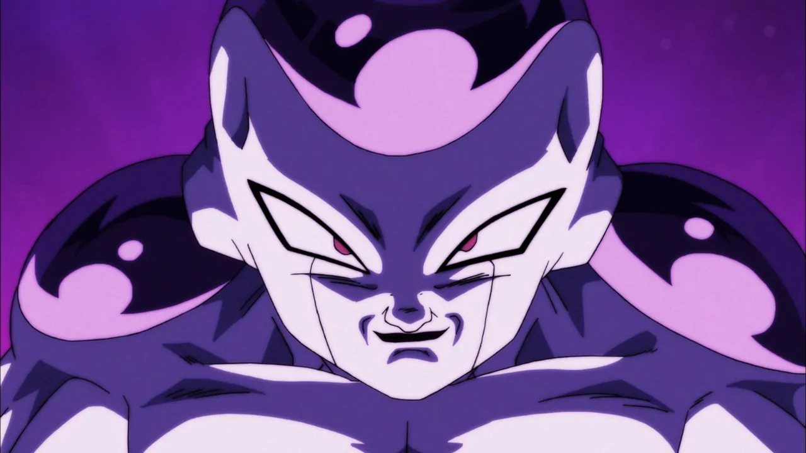
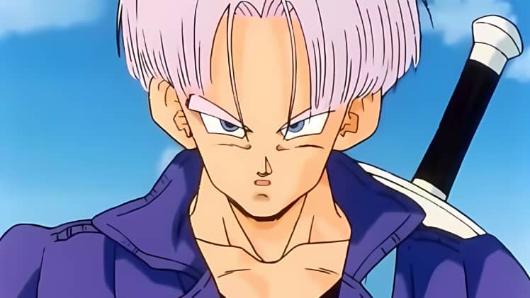
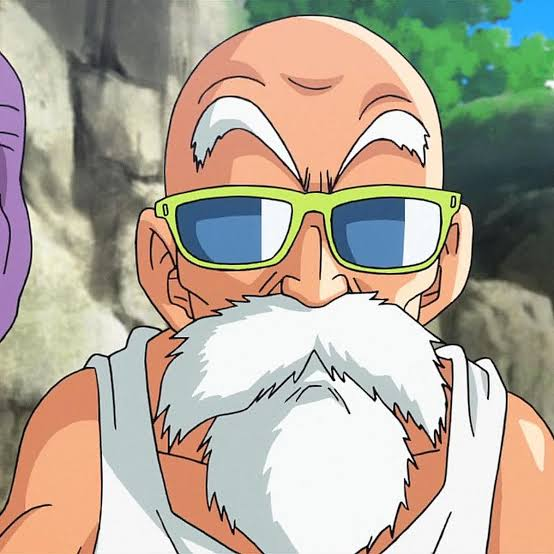

Krilin
El millor amic de Goku des de la infància i l'humà més fort de la Terra. La seva mort a mans de Freezer va desencadenar el despertar del Super Saiyan.
Els protagonistes i antagonistes més icònics de la història
Fes clic sobre qualsevol de les 6 imatges petites per veure el personatge ampliat i llegir la seva fitxa històrica:






Protagonista absolut de la sèrie. Saiyan enviat a la Terra que, gràcies a la seva bondat i passió per la superació personal, es converteix en el defensor més gran de l'univers.
El millor amic de Goku des de la infància i l'humà més fort de la Terra. La seva mort a mans de Freezer va desencadenar el despertar del Super Saiyan.

Fill de Vegeta i Bulma provinent d'un futur apocalíptic devastat pels androides. Va portar l'esperança al present i va derrotar Freezer en segons.

El mestre d'arts marcials que va entrenar Goku i Krilin, creador de la mítica tècnica del Kamehameha i figura clau fins i tot al Torneig del Poder.